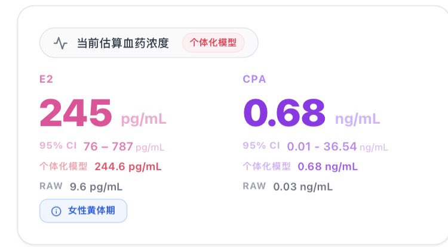
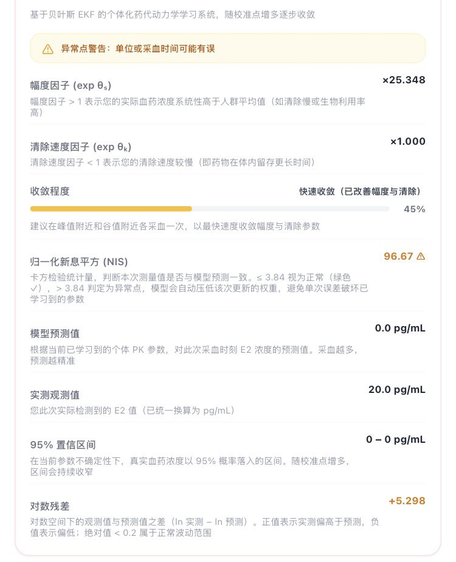

@YunoQiu56649 用药途径选择口服，然后就有CPA的选项了，不好意思位置可能放的不太好，给您造成麻烦了
顺便打个广告，如果你去医院测过血液e2水平，可以用transmtf团队的云同步版，我们支持了个体化学习可能结果更准确

顺便打个广告，如果你去医院测过血液e2水平，可以用transmtf团队的云同步版，我们支持了个体化学习可能结果更准确


我们给HRT-Trackrt配备了个体化学习模型，让它更精准预测
根据你每次的使用动态调整，借用“知识追踪”和“贝叶斯更新”，进行越多的校准，估测越准确
我们建议至少在给药前及峰谷值浓度区各去医院检测一次获得更准确的测算
功能仍在测试中（我没真实数据🥹），有问题随时反馈哦 https://t.co/JpaiIX82BO
根据你每次的使用动态调整，借用“知识追踪”和“贝叶斯更新”，进行越多的校准，估测越准确
我们建议至少在给药前及峰谷值浓度区各去医院检测一次获得更准确的测算
功能仍在测试中（我没真实数据🥹），有问题随时反馈哦 https://t.co/JpaiIX82BO